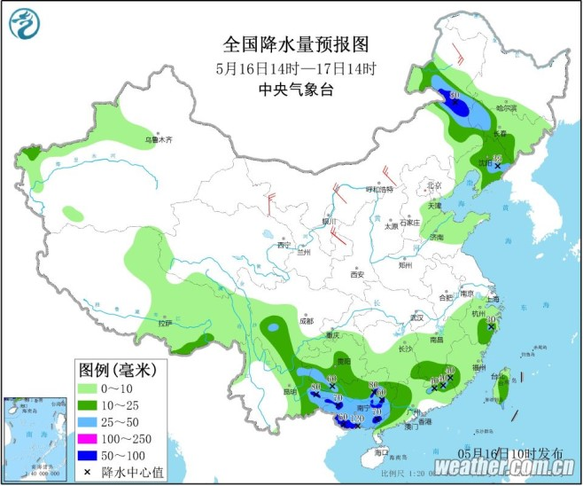

中国天气网讯 今日，华北，黄淮多地出现高温天气，截至下午两点，北京，天津，郑州等地 气温突破35°c。预报显示，今后三日，这一代的高温天气将继续发酵，高温强度将在四日后达到 鼎盛，预计北京，天津，石家庄等地明天的气温有望突破35°c，其中北京和石家庄的最高气温有望创今年最高

今天华北，黄淮一代的高温持续发酵，截至今天下午两点，陕西北部，河北北部的最高温已经普遍超过35°c，大型城市中，北京，天津等都迎来高温日
在阳光暴晒下，地表温度也逐渐走高，今天下午两点，华北黄淮大部分地区的地表温度都在50摄氏度以上，部分地区地表温度甚至超过60摄氏度。
中国天气网气象分析师介绍，明天，华北，黄淮地区35摄氏度的天气还将持续升级，并进入鼎盛阶段，高温强度和范围都将发展到最强
不过专家提醒，济南被雨水天气完美绕开，因此未来一周，当地气温还会天天上岗，在此提醒当地居民注意防晒避暑，防范持续高温 带来的不利影响。